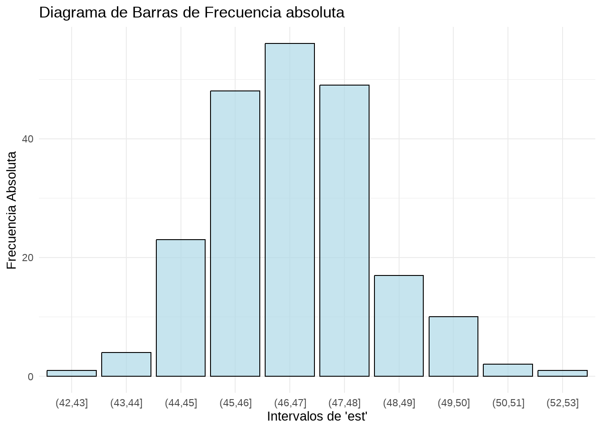
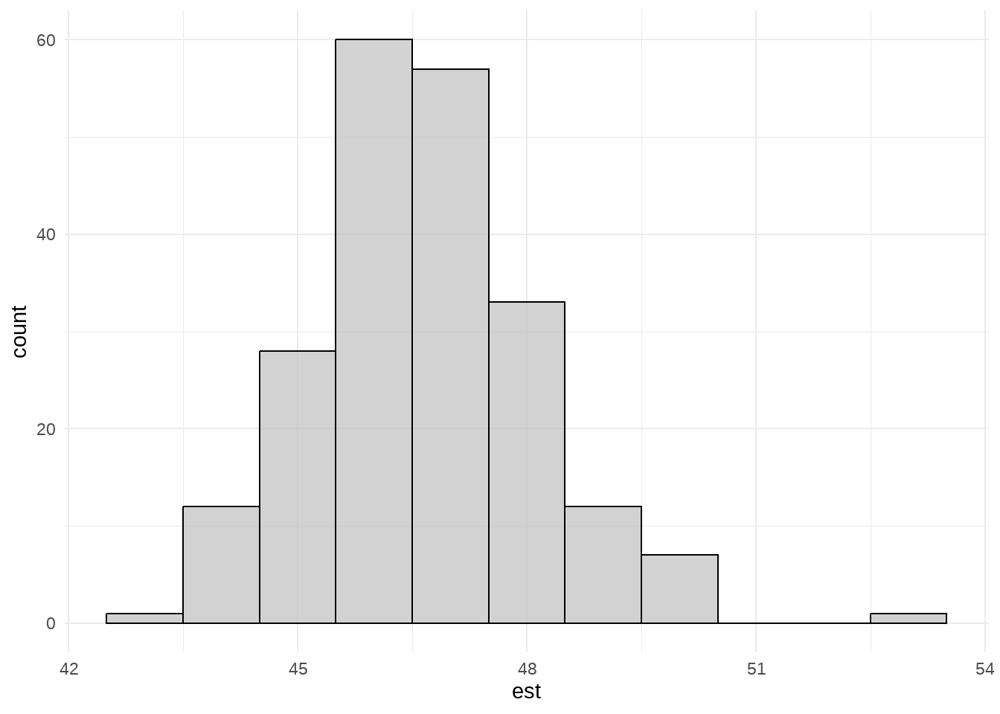

En este capítulo esyudiaremos cómo describir un conjunto de datos de forma visual, utilizando varios tipos de gráficos distintos:
Stemplot
Histograma
Diagrama de caja o boxplot
Veremos la relación visual entre un histograma y un diagrama de caja, y aprenderemos también a construir tablas de frecuencias en Excel y en R. Finalmente, veremos algunos otros tipos de gráficos que son útiles para aplicaciones concretas, como los gráficos de series temporales.
Utilizaremos dos tablas de datos,
las alturas de un grupo de alumnos y alumnas, recogidos en un fichero CSV denominado aula1.csv,
los datos analíticos de una fabricación de camembert a lo largo de un año, recogidos en un fichero CSV denominado camembert.csv
4.1 Explorando los datos con Excel y R.
Supongamos que queremos medir la altura de un grupo de alumnos de nuestra clase. Éste es nuestro grupo:
Realizamos la medida de altura de cada persona y registramos los valores en una hoja de cálculo, siguiendo las buenas prácticas que hemos visto al estudiar los datos ordenados.
Guardaremos esta tabla en un archivo CSV y lo importamos a un dataframe de R para su uso a lo largo del capítulo. Utilizamos la opción fileEncoding='latin1' para importar correctamente los caracteres acentuados.
nombre altura_cm
1 Luis 153
2 Ana 135
3 Iván 140
4 Lucía 140
5 Jessica 175
6 Antonio 138
7 Mikel 145
8 Marta 154
9 Carmen 152
10 Javier 159
11 María 154
4.2 El diagrama de tallo y hojas (stem and leaf plot o stemplot)
El diagrama de tallo y hojas, también conocido como stemplot, es una herramienta gráfica utilizada en estadística para representar la distribución de un conjunto de datos. Es especialmente útil para conjuntos de datos pequeños y proporciona una forma rápida y efectiva de visualizar la forma de los datos y su dispersión. El stemplot recibe este nombre porque el dibujo que resulta se asemeja a un tallo el que le salen las hojas que son los datos individuales.
Los componentes de un stemplot son:
Tallo: Representa el grupo principal de los valores de los datos. Generalmente, se usa la parte más significativa del número. Por ejemplo, en el número 43, el tallo podría ser 4.
Hojas: Representan los dígitos finales o menos significativos de los valores de los datos. Siguiendo el ejemplo anterior, la hoja sería 3.
4.2.1 Construcción del diagrama
Vamos a utilizar los datos de medidas de altura de nuestro grupo de alumnos. Quitamos el último dígito a la derecha de nuestros valores y colocamos verticalmente los valores resultantes ordenándolos de menor a mayor, y evitando las repeticiones. Para evitar errores en la escala, debemos incluir los valores intermedios aunque no haya ninguno en nuestros datos (en el ejemplo, el valor 16 que correspondería a los 160). Esto forma el “tallo” de nuestro diagrama:
A continuación añadimos las hojas en la celda a la derecha, que consisten en los valores que hemos “cortado” de nuestro árbol, uno al lado de otro, incluyendo esta vez los valores repetidos, en orden de menor a mayor. Por ejemplo, para el valor 135, descartamos 13 y utlizamos 5; para el valor 138, descartamos 13 y utilizamos 8, y así sucesivamente para todos los valores.
R permite realizar el stemplot mediante la función \(stem()\) de forma automática:
stem(df_aula$altura_cm)
The decimal point is 1 digit(s) to the right of the |
13 | 58
14 | 005
15 | 23449
16 |
17 | 5
El análisis del diagrama nos dice que los valores en torno a 150 cm son los más frecuentes, y que hay un valor alto (175) que se separa un poco del resto.
El stemplot es muy sencillo de hacer y nos da una visión rápida de la distribución de nuestros valores, así como de la posible existencia de valores que se separan del conjunto. Estos valores alejados, que se conocen en inglés como outliers, tienen mucha importancia en el analisis e interpretación de los datos, como veremos más adelante.
La ventaja principal del stemplot es que mantiene los valores originales de las observaciones, y puede hacerse fácilmente con bolígrafo y papel, sin necesidad de más herramientas.
4.3 Distribuciones de frecuencias
Una distribución de frecuencias es una tabla o gráfico que muestra la frecuencia con la que ocurren los valores diferentes en un conjunto de datos. Esta herramienta es fundamental en la estadística descriptiva y permite resumir y visualizar cómo se distribuyen los datos de manera clara y comprensible.
Para construir una distribución de frecuencias, agrupamos nuestros valores por intervalos, y contamos el número de observaciones que aparecen en cada intervalo. Los componentes de una distribución de frecuencias son:
las categorías o clases son los intervalos o valores específicos de los datos que se están analizando. Cada categoría representa un rango de valores en caso de datos continuos, o valores específicos en caso de datos discretos.
la frecuencia absoluta es un recuento simple de cuántas veces aparece cada valor en un conjunto de datos.
la frecuencia relativa nos muestra la proporción de cada valor frente al total. Puede expresarse como fracción (entre 0 y 1) o como porcentaje (respecto a 100), y se calcula como: \[
\text{Frecuencia Relativa} = \frac{\text{Frecuencia Absoluta}}{\text{Número Total de Observaciones}}
\]
la frecuencia acumulada nos dice cuántas observaciones están por debajo de un cierto valor.
la frecuencia relativa acumulada es la proporción de valores que están por debajo de un cierto valor
4.3.1 Construcción en Excel y en R
La tabla a continuación muestra una distribución de frecuencias de las alturas de nuestro grupo de alumnos, calculada mediante una tabla dinámica de Excel.
También podemos calcular las frecuencias absolutas y relativas de nuestra tabla en R. La formulación en R requiere una buena comprensión de las funciones de la libreria tidyverse utilizadas en la preparación de la tabla.
Importante: uso de los símbolos para designar los intervalos
R utiliza los símbolos ( y [ para definir los intervalos, tal como se hace en matemáticas.
Intervalo abierto: El símbolo ( se utiliza para denotar un intervalo abierto. El límite correspondiente no está incluuido en el intervalo.
Intervalo cerrado o semiabierto:El símbolo [ se utiliza para denotar un intervalo cerrado o semiabierto. EL límite correspondiente sí está incluido en el intervalo.
Ejemplos:
\((a, b)\) representa todos los números reales mayores que \(a\) y menores que \(b\) (excluye los valores \(a\) y \(b\)).
\([a, b]\) representa todos los números reales mayores o iguales que \(a\) y menores o iguales que \(b\) (incluye \(a\) y \(b\)).
\([a, b)\) representa todos los números reales mayores o iguales que \(a\) y menores que \(b\) (incluye \(a\), pero excluye \(b\))
\((a, b]\) representa todos los números reales mayores que \(a\) y menores o iguales que \(b\) (excluye \(a\), pero incluye \(b\)).
Las distribuciones de frecuencias se pueden visualizar mediante varios tipos de gráficos, como histogramas, gráficos de barras y polígonos de frecuencias.
Ejercicio propuesto
En la tabla de frecuencias anterior, calcular frecuencia acumulada y frecuencia relativa acumulada en Excel y en R, e incluirlas en la tabla como una columna más.
4.4 Diagramas de barra e histogramas
Cuando nuestra variable es discreta, podemos representar las frecuencias de cada valor de forma gráfica utilizando un diagrama de barras. Este diagrama utiliza barras rectangulares para representar la frecuencia de cada categoría.
El diagrama de barras no es muy utilizado en el análisis de datos, dado que habitualmente la mayoría de las variables que analizamos son numéricas continuas. Es mucho más utilizado el histograma, que es un diagrama que utiliza las barras rectangulares para hacer un gráfico de la distribución de valores continuos, previamente agrupados en clases, tal como se ha hecho en la tabla de frecuencias.
4.5 Histogramas en Excel
La tabla dinámica que hemos construido en Excel ha convertido nuestra variable continua, altura_cm, en una tabla de valores discretos, al agrupar los valores en intervalos. En Excel podemos representar las frecuencias absolutas de nuestra tabla gráficamente, insertando un gráfico dinámico a partir de la tabla:
En el caso de la tabla dinámica, Excel no construye el diagrama de barras a partir de la tabla de los valores originales, sino de las categorías de la tabla dinámica. Dado que estas categorías (los grupos que ha formado la tabla dinámica) son discretas, Excel utiliza el resultado de la tabla dinámica para hacer el gráfico con un diagrama de barras.
Este diagrama muestra su utilidad cuando representamos la distribución de un conjunto de valores más grande que nuestros once alumnos. Veamos su aplicación a los datos diarios de una fabricación de queso camembert a lo largo de un año.
La tabla de datos tiene esta estructura:
Aunque no se muestran en la figura, la tabla está formada por 211 casos. Analicemos los datos con Excel. Los pasos son:
Construir la tabla dinámica
Agrupar los datos
Insertar el gráfico a partir de la tabla
Con una agrupación de datos en intervalos de 1, esta es nuestra tabla dinámica:
En la figura siguiente vemos el histograma correspondiente a la tabla anterior, con un intervalo de clase de 1 punto de extracto seco total, y otras dos alternativas si el intervalo de clase fuese de 2 puntos o de de 0,5 puntos.
La decisión de agrupar las variables continuas en intervalos de diferentes anchuras tiene efectos sobre el aspecto del gráfico; no obstante, debemos ser capaces de interpretar que la distribución de los valores es la misma en los tres casos: hay una mayoría de casos con valores entre 46 y 48, y muy pocos casos con valores muy bajos o muy altos. En este caso, la distribución de los valores es aproximadamente simétrica, y se reparten alrededor de una mayoría de valores centrales.
Como vemos, aunque Excel utiliza el diagrama de barras para construir el gráfico, en realidad estamos construyendo un histograma, en dos etapas: agrupación de los datos en una tabla de frecuencia (tabla dinámica) y creación del gráfico a partir de esta tabla. Al construir un histograma en R, el programa realiza automáticamente ambos pasos. Para verlo por partes, vamos a construir la tabla de frecuencias y el histograma de la variable esten R.
ahora completamos el script para redirigir la tabla de frecuencias a ggplot() y hacer el diagrama de barras.
# Crear tabla de frecuencias y diagrama de barrasdf_camembert |>mutate(grupo =cut(est, breaks =seq(40, 54, by =1), include.lowest =TRUE)) |>group_by(grupo) |>summarise(frec_abs =n()) |>mutate(frec_rel = frec_abs /sum(frec_abs)) |>ggplot(aes(x = grupo, y = frec_abs)) +geom_bar(stat ="identity", fill ="darkblue", alpha =0.7, color ="black") +labs(title ="Diagrama de Barras de Frecuencia absoluta",x ="Intervalos de 'est'",y ="Frecuencia Absoluta") +theme_minimal()

Modificando el criterio de la amplitud de clase para agrupar de dos en dos en vez de uno, podemos cambiar la tabla, igual que hemos hecho en Excel.
library (tidyverse)df_camembert <-read.csv2("excel-R/camembert.csv",fileEncoding='latin1')df_camembert |>mutate (grupo =cut(est, breaks =seq(40, 54, by =2), include_lowest =TRUE)) |>group_by(grupo) |>summarise (frec_abs =n()) |>mutate(frec_rel = frec_abs /sum(frec_abs)) |>ggplot(aes(x = grupo, y = frec_abs)) +geom_bar(stat ="identity", fill ="darkblue", alpha =0.7, color ="black") +labs(title ="Diagrama de Barras de Frecuencia absoluta",x ="Intervalos de 'est'",y ="Frecuencia absoluta (núm. de casos)") +theme_minimal()
R tiene una función básica, la función hist(), que construye el histograma directamente sin necesidad de hacer previamente una tabla de frecuencias (en realidad, la tabla de frecuencias se calcula internamente).Como siempre, presentamos esta opción básica junto con la opción de la función ggplot() de tidyverse.
hist(df_camembert$est)df_camembert |>ggplot(aes(x=est)) +geom_histogram(binwidth=1, fill ="darkblue", alpha =0.7, color ="black") +theme_minimal()
(a) Función básica de R

(b) Función ggplot()
Figura 4.1: Ejemplos de histogramas
En general, la función ggplot() es más útil que las funciones básicas, porque es mucho más configurable, gracias a sus múltiples opciones, y es la recomendada para preparar gráficos que vayan destinados a informes o presentaciones. La función básica hist(), por su parte, es más sencilla de usar al principio cuando no tenemos todavía experiencia con ggplot(), y también para una visualización rápida.
En ocasiones, nos encontramos con datos que son asimétricos: hay una mayoría de valores bajos o bien de valores altos. Veamos un caso: los recuentos bacterianos de bacterias coliformes, que tenemos en la última columna a la derecha de nuestra tabla, en la variable ´coliformes´.
En este caso, vemos que la mayoría de los casos tienen valor cero. Es el caso de los recuentos de bacterias contaminantes, en el que la mayoría de los análisis tienen recuentos cero o muy bajos, y sólo en pocos casos tienen valores altos. Veremos con más detalle cómo tratar estas distribuciones cuando hablemos de las distribuciones de probabilidad, en capítulos posteriores.
En los histogramas de los recuentos bacterianos,utilizamos una opción para aumentar el número de barras que queremos en el histograma: breaks= en la función base, bins= en ggplot():
En casos de distribuciones muy asimétricas, a veces es conveniente aplicar una transformación a los datos, tal como el logaritmo decimal, mediante la función log10(); esto facilita la interpretación del gráfico:
Un gráfico de densidad en R es una representación visual suavizada de la distribución de un conjunto de datos. A diferencia de los histogramas, que dividen los datos en intervalos y cuentan las frecuencias, los gráficos de densidad utilizan técnicas estadísticas no paramétricas para estimar la función de densidad de probabilidad.
Excel no permite la representación de los gráficos de densidad; en R pueden hacerse con la función ggplot()simplemente añadiendo la geometría geom_density()
Podemos representar simultáneamente el histograma y la función de densidad:
df_camembert |>ggplot(aes(x=est)) +geom_histogram(aes(y = ..density..), bins =20, fill ="lightblue", color ="black") +geom_density(color ="red", size =1) +labs(title ="Histograma y densidad", x ="Valores", y ="Densidad")
La ventaja de los gráficos de densidad es que como no tenemos que fraccionar los datos en intervalos arbitrarios, no estamos afectados por el efecto visual de la anchura de estos intervalos. También hay otras ventajas desde el punto de vista estadístico, que veremos al hablar de las distribuciones de probabilidad.
4.7 Diagramas de caja (boxplot) y resumen de cinco números.
Este gráfico fue creado por el estadístico John Tukey en 1977, y es una herramienta fundamental en la exploración de datos. Se basa en un grupo de medidas que se utiliza ampliamente en la descripción de conjuntos de datos, el conjunto de cuartiles. Si dividimos un grupo de datos ordenados en cuatro partes iguales, mediante tres puntos de corte, llamamos primer cuartil o \(Q1\) al valor que se situa en el 25%; segundo cuartil, o \(Q2\), al valor que se sitúa en el centro (50%), y tercer cuartil, o \(Q3\), al punto que se situa en el 75% de los datos. A estos tres valores añadimos el mínimo y el máximo, y tenemos un conjunto de cinco números que nos permiten describir la forma de la distribución de datos con cierta precisión. El segundo cuartil (\(Q2\)), que corresponde al 50% de los datos, se conoce habitualmente como mediana. El valor resultante de restar \(Q3-Q1\) es lo que se conoce como rango intercuartil o \(IQR\), y es una medida de la dispersión de la distribución de datos (mide la amplitud de la distribución).
El diagrama de caja, también conocido como boxplot, es un gráfico que permite resumir las características principales de un conjunto de datos utilizando estos cinco números, tal como se explica a continuación. Sus ventajas son:
Muestra la mediana y los cuartiles (Q1 y Q3) de los datos.
Permite identificar la simetría de la distribución: si la mediana no está en el centro, la distribución no es simétrica.
Permite detectar posibles valores atípicos, representando los valores atípicos (outliers) que están lejos del resto de los datos (un valor es atípico si está más allá de (Q3 + 1.5 IQR) o (Q1 - 1.5 IQR).
La construcción de un diagrama de caja es como sigue:
Microsoft Excel no dispone de un diseño de gráficos de caja que sea práctico, por lo que recurriremos siempre a R para realizarlos.
Como casi siempre, hay una función de base que dibuja un boxplot y también una geometría de ggplot()que lo hace: geom_boxplot(), con muchas más opciones de diseño y formato que la opción de base.
boxplot(df_aula$altura_cm)
Figura 4.4: Boxplot con los gráficos básicos de R
Vamos a repetir el gráfico para los datos de producción de queso camembert, usando ahora los gráficos básicos y los de ggplot():
df_camembert <-read.csv2("excel-R/camembert.csv",fileEncoding='latin1')df_camembert$fecha <-as.Date(df_camembert$fecha, format("%d/%m/%Y"))boxplot(df_camembert$est)df_camembert |>ggplot(aes(x="", y=est))+geom_boxplot() +theme_bw() +theme(axis.text.x =element_blank(), # Oculta las etiquetas del eje xaxis.ticks.x =element_blank()) # Oculta las marcas del eje x
(a) Boxplot básico de R
(b) Boxplot utilizando ggplot()
Figura 4.5: Ejemplos de boxplot
Un uso muy interesante del boxplot en R consiste en agrupar los boxplot de una variable en funcion de otra. En este caso, agrupamos el extracto seco por meses previa agrupación de la fecha. Esta agrupación puede hacerse tanto en los gráficos básicos de R como en ggplot():
df_camembert$mes <-format(df_camembert$fecha, "%m")boxplot (df_camembert$est~df_camembert$mes)df_camembert |>mutate (mes =format(fecha, "%m")) |>ggplot(aes(x = mes, y = est)) +geom_boxplot() +labs(title ="Boxplot de 'est' por Meses",x ="Mes",y ="Valor de est") +theme_minimal()
(a) Boxplot básico de R
(b) Boxplot utilizando ggplot()
Figura 4.6: Ejemplos de boxplot
4.8 Histogramas y diagramas de caja
Resulta muy útil comprender visualmente la relación entre el boxplot y el histograma para entender la distribución de los datos. En la gráfica siguiente se representan ambos simultáneamente
df_camembert |>ggplot(aes(x = est)) +geom_histogram(fill ="lightblue", color ="black", bins =20, alpha =0.7) +geom_boxplot(width =2, fill ="darkgrey", alpha =0.7, position =position_nudge(y =-2)) +labs(title ="Histograma y Boxplot", y ="Frecuencias")
df_camembert |>ggplot(aes(x =log10(coliformes+1))) +geom_histogram(fill ="lightblue", color ="black", bins =20, alpha =0.7) +geom_boxplot(width =4, fill ="darkgrey", alpha =0.7, position =position_nudge(y =-4)) +labs(title ="Histograma y Boxplot", y ="Frecuencias")
4.9 Gráficos de dispersión
Un gráfico de dispersión, también conocido como diagrama de dispersión o scatter plot, es una representación gráfica que utiliza puntos para mostrar la relación entre dos variables numéricas. Cada punto en el gráfico representa una observación del conjunto de datos y se coloca en el plano cartesiano de acuerdo con sus valores en las dos variables que se están comparando.
Un gráfico de dispersión se compone mediante puntos:
Cada punto en el gráfico representa una observación.
La posición del punto en el gráfico está determinada por los valores de las dos variables para esa observación.
Los gráficos de dispersión son útiles para identificar varios aspectos de la relación entre las dos variables:
Si los puntos tienden a agruparse a lo largo de una línea recta ascendente, esto indica una correlación positiva (a medida que una variable aumenta, la otra también lo hace).
Si los puntos se agrupan a lo largo de una línea descendente, esto indica una correlación negativa (a medida que una variable aumenta, la otra disminuye).
Si los puntos forman una curva en lugar de una línea recta, esto sugiere una relación no lineal entre las variables.
La dispersión de los puntos puede indicar la variabilidad de los datos. Puntos que están muy lejos del patrón general pueden ser valores atípicos.
Como siempre, vemos el gráfico de dispersión en Excel y a continuación en R. Utilizamos la tabla de datos camembert.csv y representamos las variables esty mg.
(a) Tabla de origen mostrando una parte de los datos seleccionados
Lo esperable en nuestros datos es que el valor de est y el de mg estén asociados, y a valores altos de la primera variable correspondan valores altos de la segunda (para el mismo producto y sin cambios de tecnología). Sin embargo, algunos valores parecen no encajar en este modelo; es el caso de un valor de estpor encima de 52% con un valor de mginferior a 23%, o el caso de un valor de mg en torno al 28% con un valor de est por debajo de 47%. Debemos revisar estos valores aparentemente anormales para verificar si ha habido un error en la toma de muestras o un error analítico. En fábricas con productos diferentes cuyos resultados analíticos se recogen en una tabla de datos común, a veces puede haber errores en la introducción de los códigos de producto, de forma que la toma de muestras y los análisis pueden ser correctos, pero estar mal asignados al guardar los datos.
Como vemos, los gráficos de dispersión son una herramienta esencial en el análisis de datos exploratorio, ya que permiten visualizar relaciones y patrones en los datos, identificar correlaciones y detectar posibles anomalías. Esta información es crucial para realizar análisis estadísticos más profundos y tomar decisiones basadas en datos.
Excel permite hacer gráficos de dispersión de dos variables que deben estar en diferentes columnas, pero no permite hacer gráficos de dispersión multiserie. En mi blog he propuesto una forma de hacer estos gráficos multiserie en Excel de forma que se soslaye esta deficiencia.
4.10 Gráficos de series temporales
Hasta ahora hemos utilizado gráficos y tablas que describen la estructura y forma de una variable, o las relaciones entre dos variables. Hay otros gráficos que tienen en cuenta la forma en la que esos datos cambian con el tiempo. En este caso, será necesario que hayamos recogido los intervalos de tiempo en los que se han producido nuestros valores en una variable de nuestra tabla.
En un gráfico de series temporales,
el eje horizontal (X) representa el tiempo. Los puntos de tiempo pueden ser minutos, horas, días, meses, años, etc.
el eje vertical (Y) representa los valores de la variable que se está estudiando. Estos valores pueden ser medidas como temperatura, ventas, precios, etc.
cada valor individual corresponde a un punto
los valores se conectan mediante una línea que conecta los puntos de datos, mostrando cómo cambian los valores de la variable a lo largo del tiempo.
normalmente, en un gráfico de series temporales no suelen representarse los puntos individuales para facilitar la legibilidad del gráfico.
En nuestro conjunto de datos de fabricación de queso camembert, la primera columna de la tabla recoge la variable fecha, lo que nos permite ordenar nuestros valores en el tiempo.
Cuando representamos valores en el tiempo, nunca usaremos el diagrama de barras, sino el gráfico de líneas.
4.10.1 Cómo hacer los gráficos de series temporales en Excel y en R
Para hacer el gráfico en Excel, seleccionamos la columna este insertamos un gráfico de líneas. A continuación, con el cursor sobre el gráfico, pulsamos el boton derecho y seleccionamos la opción Seleccionar datos. Una vez abierto el cuadro de opciones, editamos las etiquetas del eje X y seleccionamos el rango de la variable fecha desde la fila 2 hasta la última.Aceptamos, y a continuación editamos el formato del eje Y para sustituir el valor mínimo de \(0\) por \(42\), que es el valor que queremos como mínimo para nuestro gráfico.
Figura 4.9: Tabla y gráfico de series
A continuación, los gráficos en R, como siempre con la opción de gráficos base y con ggplot(). R formatea automáticamente el rango del eje Y y no tenemos que hacer ninguna corrección de formato.
(b) Gráfico de series temporales utilizando ggplot()
Figura 4.10: Ejemplos de gráfico de series temporales
4.10.2 Resumen
Los gráficos de series temporales son útiles para:
Identificar Tendencias:
Una tendencia es una dirección general en la que los datos se mueven a lo largo del tiempo. Puede ser creciente, decreciente o constante.
Detección de Estacionalidad:
La estacionalidad se refiere a patrones que se repiten en intervalos regulares de tiempo, como las ventas de productos estacionales.
Identificar Ciclos:
Los ciclos son fluctuaciones que ocurren en intervalos no regulares y pueden deberse a factores económicos o de otra índole.
Detección de Anomalías:
Los picos y caídas repentinas pueden indicar eventos inusuales o errores en los datos.
Los gráficos de series temporales son cruciales en diversas áreas:
Economía y Finanzas:
Seguimiento de precios de acciones, tasas de interés y otros indicadores económicos.
Ciencia y Tecnología:
Monitoreo de variables ambientales, datos meteorológicos y medidas científicas.
Negocios:
Análisis de ventas, demanda de productos y desempeño empresarial a lo largo del tiempo.
Los gráficos de series temporales proporcionan una visión clara y concisa de cómo cambian los datos a lo largo del tiempo. Esta visualización es fundamental para el análisis predictivo, la toma de decisiones y la identificación de patrones y anomalías en los datos.